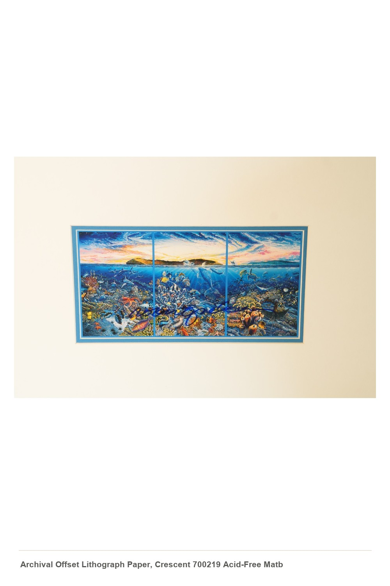
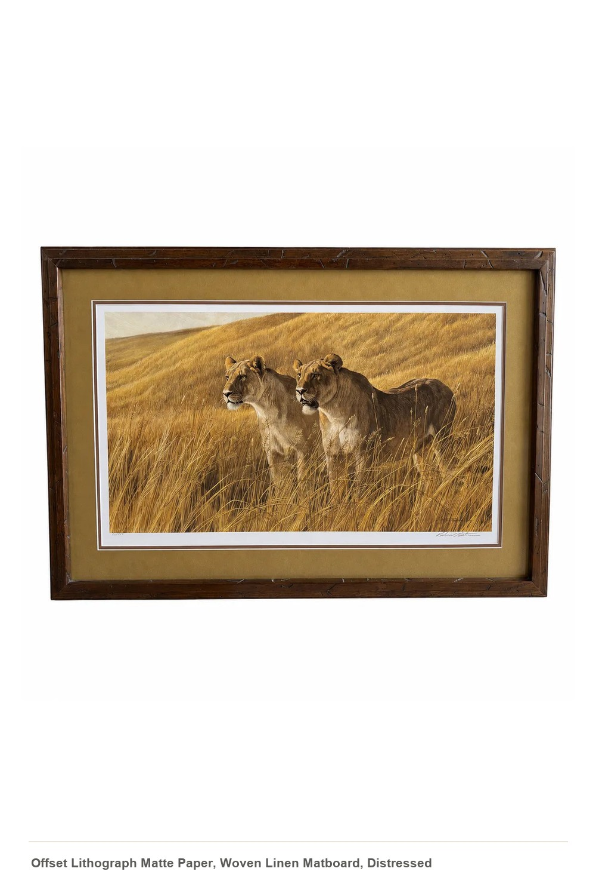

In Stock • Verified eBay Archive
In Stock • Verified eBay ArchiveStephen McMillan Mmmmmooooo Signed Cow Aquatint Etching #182/250 Framed 24x19 in
$280.00 USD
- Condition: Used
- Size: 19 in
- Style: Contemporary Realism
Stephen McMillan Mmmmmooooo Signed Cow Aquatint Etching #182/250 Framed 24x19 in. Notable details include Condition: Used, Size: 19 in, Style: Contemporary Realism. Suited for collector display or thoughtful vintage gifting, available via archivedandfound on eBay. #FineArt #SignedPrints
Shop This Piece on eBay → Browse Art Prints
Related Curated Pieces

$358.97Robert Bateman Catching The Scent Wolf Signed Print #763/950 Mill

$445.82Robert Lyn Nelson Molokini Fantasy Signed Print Matted Two Worlds

$434.98Robert Bateman Signed Lionesses 1977 Art Print Limited Edition Wi

$6,200.00Glenn Dobrusky Hand Carved Cedar Wood Whale Tail Sculpture Coasta